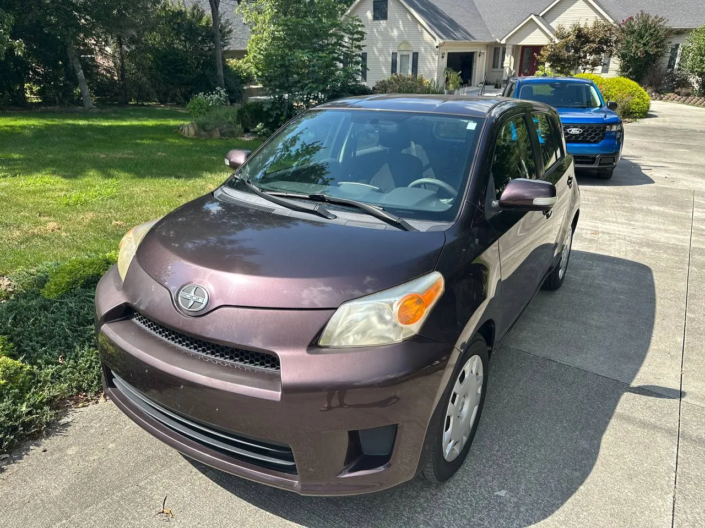

Why this one
- Brand-new brakes and rotors. Just done, so that bill is already paid. Not by you.
- A second set of nearly new tires comes with it. They came off a neighbor's car a week after they were mounted, so they have almost no miles. That is a few hundred dollars you won't spend next year.
- About 93,000 miles on a 2012. Most cars this age are well past 150k. This one has a lot of road left.
- Toyota underneath. Scion was Toyota's brand, and this is the same proven 1.8L four-cylinder used in the Corolla. Parts are cheap and any shop can work on it.
- Easy on gas. EPA rated around 27 city and 33 highway.
- Small outside, roomy inside. Five doors and fold-down rear seats. Parks anywhere, hauls more than you'd think.
- Great first car, commuter, or around-the-Glade runabout.
The honest part
- Headlight lenses are yellowed. A $20 restoration kit and an afternoon clears them up.
- Paint is noticeably faded, with some light wear. It's a driver, not a show car, and it's priced that way.
- Cloth seats show light, normal wear.
Cosmetics are what bring the price down. The parts that cost real money (brakes, tires, low-mile Toyota drivetrain) are the strong points. Come drive it and judge for yourself.
Details
- Year / make
- 2012 Scion xD
- Body
- 5-door hatchback
- Engine
- 1.8L 4-cylinder, gas
- Transmission
- Automatic
- Drive
- Front-wheel drive
- Mileage
- About 93,000
- Color
- Dark plum metallic
- VIN
- JTKKU4B46C1023343
- Location
- Fairfield Glade, TN